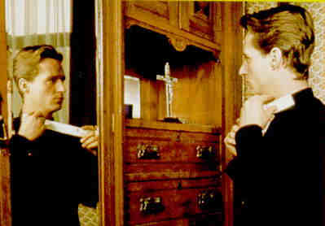

PRIEST A-, A-UK/1994/COLOR/WIDESCREEN 1.66:1/STEREO SURROUND/98 MINUTES/DIRECTED BY ANTONIA BIRD/STARRING LINUS ROACHE, TOM WILKINSON/MIRAMAX/24 CHAPS/CLV/$39.99 Priest is a beautifully done film. It is provocative, yet sensitive. All the questions raised in Priest are not answered in pat responses. This is a film true to its own spirit. Controversial since it deals with homosexuality within the Catholic Church, the film took harsh criticism from Catholic political powers, but in truth, the honesty of this film should have been seen in a more positive light by the Church. Father Greg Pilkington, a young, dedicated priest, comes to a parish in Belfast to replace an older priest who goes off the deep end in a highly effective opening sequence. Working together with an senior, free-spirited priest in the in the congregation, Father Greg learns about the realities of life and the conflicts imposed by the restrictions of the Church. Armed with highly polished ideals on his arrival,  Pilkington finds that truth is the ultimate ally. Many levels of morality are explored, from the central issue of homosexuality to incest to the responsibilities of the confessional. Priest is a challenging and enriching experience.Linus Roache finds the range to capture a believable change in Father Gregg. Tom Wilkinson is extremely appealing as Father Matthew. He invests the role with dignity and compassion. Director Antonia Bird must be commended for bringing out the best in her actors. The small roles are cast perfectly and the actors deliver their lines with conviction. Bird's overall sense of place and situation is perfect in Priest. She doesn't back away from the difficult scenes making Priest an unusual film indeed. The film is very handsomely photographed by Fred Tammes and Jimmy McGovern has scripted an intelligent and literate screenplay. Priest is a very powerful laser disc. Every lighting situation is delivered with punch. The colors are alive and accurate. Transferred in very sharp images, there are no noticeable annoying artifacts. The soundtrack is extremely well done. This is an excellent production from conception to laser reality. |